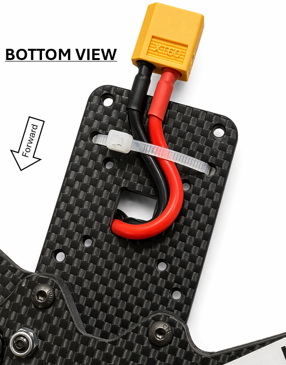

Task 7: Set up powertrain
Install the XT60 battery lead and plug all four motor leads into the ESC.
Parts required
- XT60 battery connector
- Two M2.5 × 6 mm round-head hex screws
- Lower frame with the FC/ESC stack installed
- Frame kit
- Two black zip ties
- Supplies shelf
- Two white zip ties
Tools required
- 1.5 mm Allen key
- Snips
Step 1. Install the XT60 battery lead
- Retrieve the XT60 battery lead and two M2.5 × 6 mm round-head hex screws from the supplies shelf.
- Feed the two ring terminals from the bottom side of the lower deck through the square cutout aft of the FC/ESC stack.
- Attach the red lead to the ESC binding post marked positive (+) and secure it with one M2.5 × 6 mm screw.
- Attach the black lead to the ESC binding post marked negative (−) and secure it with the second M2.5 × 6 mm screw.
- Ensure neither ring terminal nor battery lead bears against the FC/ESC ribbon cable, the JST-SH receptacle on the ESC, the raised FC/ESC stack, or any mounting hardware.

Feed the XT60 battery lead through the aft square cutout.
Step 2. Connect the motor leads
- Plug each motor connector into its corresponding ESC port.
- Press each connector fully into place.
End state.
The XT60 lead is installed, and all four motor leads are connected to the ESC.
The XT60 lead is installed, and all four motor leads are connected to the ESC.
Step 3. Secure the motor leads and battery lead
- Use the two black zip ties from the frame kit and two white zip ties from the supplies shelf to secure the motor wires to the arms at the instructor-directed tie-down points.
- Use a zip tie to secure the battery lead to the lower deck so that only the yellow XT60 connector protrudes beyond the rear edge of the frame, as shown in .
- Tighten each zip tie only enough to prevent the wires from shifting in flight.
- Trim the excess tie length flush with the snips.

Bottom view. Secure the battery lead to the lower deck so that only the yellow XT60 connector extends beyond the rear edge.
Common errors
- Swapping the positive and negative battery leads.
- Leaving a motor connector only partially seated.
- Overtightening a zip tie until it pinches the motor wires.
- Leaving excess battery cable hanging past the rear edge of the lower deck.